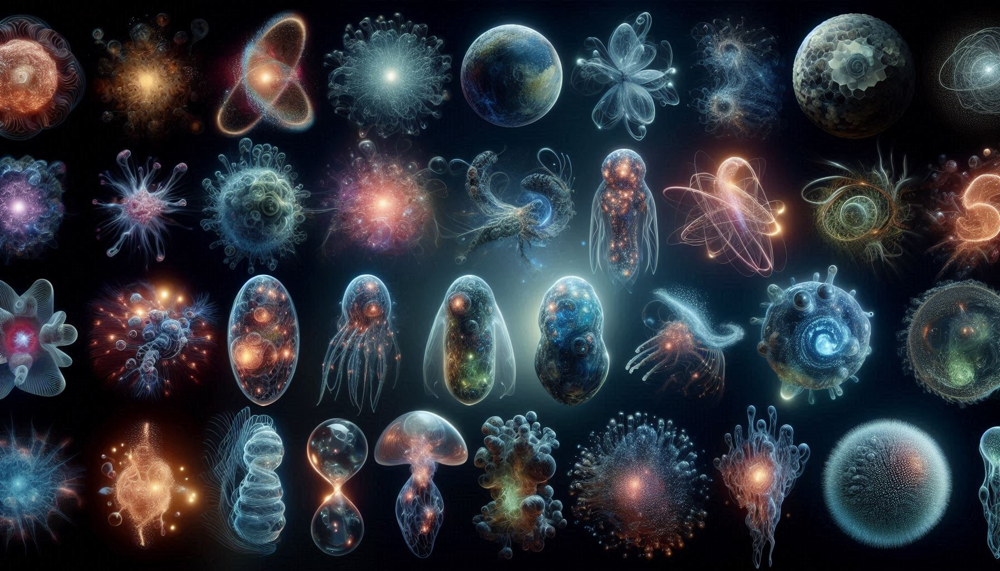

ARE WE ALONE IN THE COSMOS?
Universe-inte size nammude oohathinum appuram aanu. Nammude Milky Way galaxy-il mathram 100-400 billion stars undu. Athupole billions of galaxies vereyum undu!
👉 Drake Equation: Dr. Frank Drake undakiya oru formula prakaram, nammude galaxy-il mathram nammukkumayi communicate cheyyan kazhiyunna thousands of civilizations undakan chance undu.
Scientists aliens-ine avarude energy use cheyyunna reethi vechu 3 types aayi thirichittundu (Kardashev Scale):
| TYPE | POWER SOURCE | CAPABILITY |
|---|---|---|
| Type I | Planet Energy | Nammude planet-ile motham energy use cheyyunnavar (Humans are only 0.73). |
| Type II | Star Energy | Avarude star-inte (Sun) motham energy use cheyyunnavar (Dyson Sphere). |
| Type III | Galaxy Energy | Motham Galaxy control cheyyunnavar. Avar namukk 'Gods' pole aayirikkum. |
1977-il Jerry Ehman enna scientist-inu space-il ninnu oru radio signal kitti. Athu 72 seconds neendu ninnu. Athu natural aayi varaan vazhiyilla ennu kandu ayaal paper-il "Wow!" ennu ezhuthi. Innu vare athu enthanennu aarkkum kandupidikkan kazhiyilla. 👽
Ithu oru valiya logic mystery aanu. Universe-il ethra planets undenkil, ithuvare enthu kond oru alien polum namme contact cheythilla?
👉 The Great Filter: Chilappol life create cheyyuka ennath valare tough aayirikkam.
👉 Dark Forest Theory: Space-il ella civilizations-um pedichu maranju irikkukayaavaam, karanam attack cheyyappedum enna bhayam.
👉 Zoo Theory: Aliens namme oru "Zoo"-ile pole observe cheyyukayaavaam, but avar interact cheyyilla.

Ippo US Navy and Pentagon oficial aayi videos release cheythittundu. Nammude technology-kku kazhiyatha speed-il move cheyyunna objects (UFOs) avar confirm cheythu. Avar athine UAP (Unidentified Aerial Phenomena) ennu vilikkunnu.
Scientific aayi nokkiyal "Alien life" undakan 99% chance undu. Pakshe nammal avarude thalayil green color-um rendu thalayum swapnam kaanunnathinekkal different aayirikkum reality.